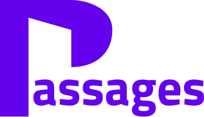

Transcultural mediation in Drôme-Ardèche
PassageS is a mobile team that steps in, at the request of health and social care professionals, when language barriers and cultural distance put care or support at risk. Free of charge for the requesting organisation.
Request a mediation (French form)How it works
A session brings together the service user, the professionals involved, an interpreter-mediator from the same linguistic and cultural background as the user, and facilitators from the PassageS team. It lasts two to four hours and may be repeated once. The work goes beyond translation: it addresses the cultural, symbolic and relational dimensions of the situation and gives the person back a capacity to act.
The project is run by a multidisciplinary team (general practitioner, social worker, clinical psychologist, project coordinator) and covers Valence, Romans, Privas and Montélimar. It is delivered by the Mimesis association in partnership with the Centre Babel in Paris, a European resource centre for transcultural clinical practice, and follows the model tested in Poitiers since 2021.
What our needs survey found
80%
Regularly face transcultural situations
90%
Report mutual misunderstanding and language barriers
37%
Regularly work with an interpreter
87%
Find an external specialist team relevant
93 respondents, May to August 2025.
Support the project
Mediation is free for the organisations we work with. Donations and partnerships fund interpreting hours, training for the interpreter network and the mobile team.